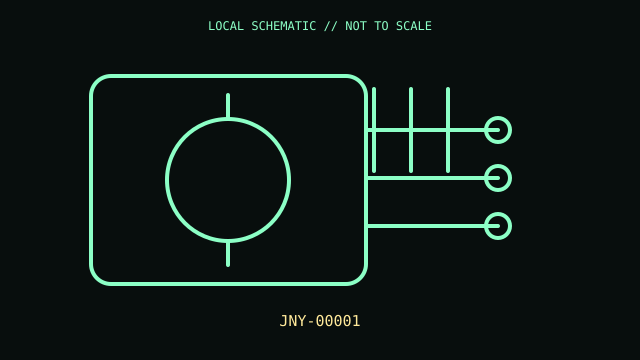

[ ADAPTIVE AND SWITCH-ACCESS CONTROLS // IDENTIFIED COMPONENT ]
Microsoft Adaptive Hub
Wireless and wired hub for connecting external switches, buttons, and joysticks to compatible hosts.

MODEL IDENTIFICATION: Exact model / identifier: JNZ-00001. Confirm label, package suffix, region, and revision against manufacturer documentation.
Model specifications
| Catalog subcategory | Adaptive and switch-access controls |
|---|---|
| Exact model / ID | JNZ-00001 |
| Physical mechanism and primary specifications | Five 3.5 mm switch ports; three USB-C accessory ports for Microsoft Adaptive Buttons; a separate USB-C charging port; Bluetooth pairing to host devices and three profile slots. Consult the guide for exact port behavior. |
| Host, interface, and driver caveats | Designed for Windows 10/11 accessibility use with Microsoft Accessory Center; Bluetooth pairs the hub to the host, while its USB-C accessory ports are for Microsoft Adaptive Buttons. It is not a generic USB hub. Confirm model marking; distinguish from Xbox Adaptive Controller. |
| Revision identification | Record the complete printed SKU/PID, hardware revision, regional layout, and supplied accessories; similarly named variants may use different interfaces, drivers, or components. |
Preservation and service notes
Preserve cable and document port assignments/profiles. Avoid strain on switch jacks/USB-C; clean controls dry and use only documented accessory types.
Record unit condition, accessories, host OS, software/firmware version, and test conditions separately from manufacturer-published specifications.
Primary manufacturer documentation
- Xbox Adaptive Controller product and accessoriesManufacturer product or support documentation; verify exact model and regional revision against the device label.
- Microsoft Adaptive Hub user guideManufacturer product or support documentation; verify exact model and regional revision against the device label.
Support pages can change; preserve the applicable manual and its revision with the physical equipment record.